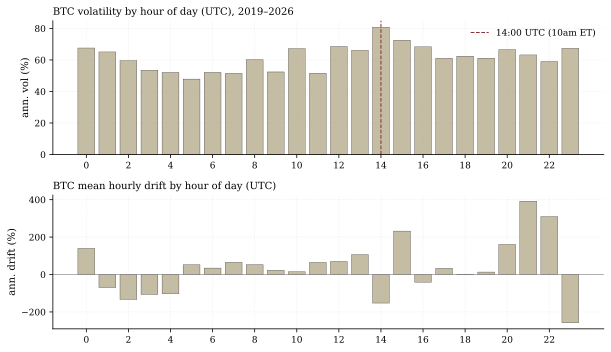
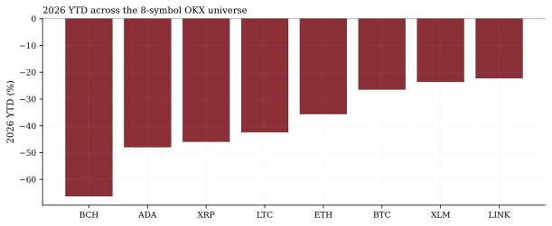
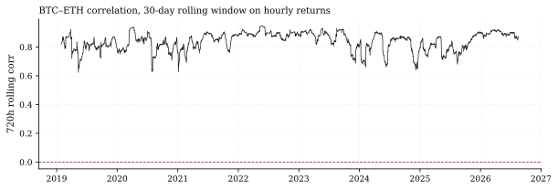

The one-paragraph version. The crypto market markets itself as 24/7; the data says it keeps US market hours. Across 66,889 hourly OKX bars per symbol (2019-01-01 through 2026-08-19), BTC's annualized volatility by hour of day runs from 47.8% at 05:00 UTC (the Asia-afternoon lull) to 80.8% at 14:00 UTC — 10 a.m. ET, the heart of the US session — a 1.69× intraday range. Weekends are calmer than weekdays (50.4% vs 66.1% annualized). And in 2026, all eight majors are down — with alts moving at BTC betas of 0.88–1.22 and R² up to 0.80. The diversification case inside this universe is close to zero.
How we worked this problem
We treat the 1h book as a microstructure dataset, not a chart: hour-of-day vol and drift profiles, weekend vs weekday conditioning, pairwise correlation on hourly returns, and 2026 cross-sectional beta regressions. The question each exhibit answers: is there structure here a desk could use, or is it one factor in eight tickers?
The data audit
| # | Source | Coverage | As-of | Notes |
|---|---|---|---|---|
| 1–8 | OKX 1h bars, USDT pairs: BTC, ETH, XRP, LTC, BCH, ADA, LINK, XLM | 66,889 bars each, 2019-01-01 → | 2026-08-19 00:00 UTC | Freshest house data; naive-UTC index |
| 9 | Perp funding cache (BTC) | 7,212 settlements, 2020-01-01 → | 2026-07-31 | 19 days stale — disclosed where used |
The funding adjustment is not embedded in the hourly stats; the cache shows BTC perps paying a modest +6.7% annualized over the trailing 30 days it covers (through Jul 31).
The exhibits
The US session is the day. BTC vol by hour: minimum 47.8% annualized at 05:00 UTC (the Asia-afternoon lull before Europe opens), maximum 80.8% at 14:00 UTC (10 a.m. ET — the first full hour after the US cash open). The intraday vol ratio is 1.69×. Mean drift is likewise concentrated — best hour 21:00 UTC, worst 23:00 UTC — but drift-by-hour is noisy; the vol profile is the robust fact.

Weekends are calm. Weekend BTC vol annualizes to 50.4% versus 66.1% on weekdays — a 0.76× multiple. The "weekend flash-crash" narrative is about liquidity depth (external volume data below), not vol clustering: when volume leaves, realized vol drops with it until an order actually has to move size.
One beta, eight wrappers. 2026 hourly regressions on BTC: every alt loads 0.88–1.22 with R² from 0.35 (XLM) and 0.36 (BCH) to 0.80 (ETH). BTC–ETH rolling 30-day correlation is 0.872 today (mean since 2019: 0.839, minimum 0.624). And the cross-section in 2026: zero of eight symbols positive; best LINK at −22.3%, BTC −26.4%, ETH −35.6%, worst BCH at −66.3%; daily cross-sectional dispersion averages 1.50% with a 2026 max day of 9.93%.


So what — opportunities
- Execution windows are measurable. If you must trade size in crypto, the 05:00 UTC hour has historically been the quietest (lowest adverse vol) and the US session the most dangerous — an execution-scheduling input, not alpha.
- Dispersion trades are the clearest inside trade. With betas ~1 and R² ≤ 0.80, the residual dispersion (mean 1.50%/day) is where any long/short structure lives — but our engine's documented finding is that reachable crypto edges at daily/1h horizons collapse into beta after costs.
So what — risks
- Drying liquidity. External: BTC trading volume fell below $8B in April 2026, lowest since Oct 2023 (CoinDesk); top-10 spot CEX volume was $2.7T in Q1 2026 vs $4.5T in Q4 2025. Thin books make the US-session vol fatter when size finally moves.
- Crowding is modest but the trend is down. All-negative cross-section with benign funding is a de-risked complex — rallies here are short-covering rallies, structurally weaker.
Machinery
All numbers: analysis.py → assets/numbers.json, regenerated from house data in a single run before publication.
Limitations
One venue (OKX) — US/EU exchange hours may differ; naive-UTC timestamps; hourly close-to-close vol ignores intra-hour range; betas are 2026-only OLS; funding not embedded in returns; the academic literature (Bitstamp time-of-day study below) finds similar intraday periodicity on other venues, supporting external validity.
Sources — external reading list
| Claim | Source |
|---|---|
| BTC volume <$8B, lowest since Oct 2023 | CoinDesk, Apr 29 2026 |
| Spot CEX volume $2.7T Q1 2026 vs $4.5T Q4 2025 | Fuze Finance statistics |
| Time-of-day vol/volume periodicity (Bitstamp) | ScienceDirect, Finance Research Letters |
Internal sources: the eight OKX lineage rows plus the perp funding cache above. Not investment advice.
OKX 1h bars (8 symbols); hour-of-day profiles; hourly OLS betas; perp funding cache